Este guia é para quem vai apresentar o KORbuild a um cliente. Não é preciso conhecer o sistema antes: siga a ordem abaixo, entre com os usuários indicados e use os quadros "O que dizer" como roteiro. A apresentação completa — Daily, Crew, Measure e Settings — leva cerca de 40 minutos; com perguntas, reserve uma hora. Numa reunião mais curta, escolha os atos que interessam ao cliente.
A história em um minuto
Nos Estados Unidos, as empresas de construção tocam as obras com papel, mensagem de celular e planilha. O encarregado escreve o diário à noite (ou não escreve), o escritório corre atrás das pessoas por telefone e, quando o cliente contesta um atraso, não há um registro confiável do que aconteceu no canteiro.
O KORbuild é uma plataforma, um cadastro de obras e de pessoas, com módulos que a empresa liga conforme precisa:
| Módulo | Em uma frase | Quem usa |
|---|---|---|
| Daily | O diário de obra, preenchido no celular em minutos, aprovado e compartilhado com o cliente em PDF lacrado. | Encarregado (celular), escritório (computador) |
| Crew | O ponto da equipe com GPS e cerca, timesheets e custo de mão de obra por obra. | Encarregado (celular), escritório |
| Measure | Medição de plantas em pés e polegadas, assemblies, quantidades, lista para cotação e proposta. | Orçamentistas (computador) |
| Settings | A configuração da empresa: funcionários, encargos, regras de jornada, obras, contatos, usuários e perfis. | Administrador do escritório |
| Concorrências | Convites para cotar entre empresas: pacote, comparação, fechamento, um canal que vira a conversa da obra, quarteirização. | O escritório da contratante; as prestadoras (Measure ou link) |
O que dizer
"O KORbuild substitui o diário de papel, o cartão de ponto de papel e a medição em planilha por um sistema só. Tudo o que o campo faz no celular chega ao escritório no mesmo dia — e funciona até sem sinal no canteiro."
O KORbuild atende os dois lados da obra: a construtora (general contractor), que gerencia a obra, e as prestadoras de serviço (subcontractors), que executam. Cada prestadora tem o próprio diário, o próprio ponto e o próprio cronograma; a construtora aprova os diários e vê quem está na obra e as horas — nunca quanto a prestadora paga ao seu pessoal. Uma prestadora também pode ser cliente sozinha, com obras direto com o dono. Leia Como o KORbuild se organiza antes da reunião: leva três minutos.
O protótipo tem três empresas: a Construtora Exemplo (a construtora), a Ridgeline Concrete & Masonry e a Northfield Framing & Siding (duas prestadoras).
Antes de começar
- Abra o link do protótipo: na página de entrada principal, clique em Abrir o protótipo. Também dá para ir direto ao endereço do protótipo (ele termina em
?demo). - Use Chrome ou Edge no computador. Para mostrar o lado do campo num celular de verdade, abra o mesmo link no celular (Chrome no Android, Safari no iPhone).
- Confira o botão de idioma EN | PT no alto do cartão de entrada.
- Se alguém já mexeu no protótipo naquele navegador, recomece: menu do usuário (as suas iniciais, no canto de cima) › Recomeçar demonstração. Tudo volta aos dados de exemplo originais.
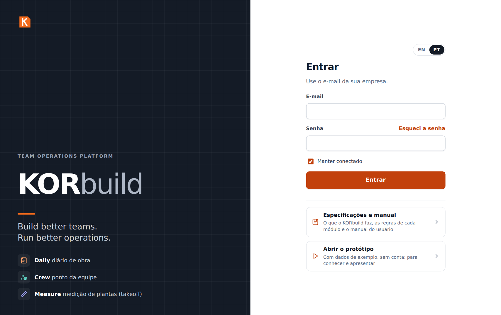
No protótipo
O protótipo guarda tudo no navegador (ainda não há servidor). Duas consequências: o que você faz no celular não aparece no computador, e duas pessoas nunca veem as mudanças uma da outra. Para mostrar o caminho campo → construtora, troque de usuário no mesmo navegador: menu do usuário › Sair e entre com o outro usuário. As contas dos clientes, com banco de dados de verdade, estão sendo construídas; a página de entrada principal já mostra onde eles vão entrar.
Usuários da demonstração
No protótipo não há senha: na tela de entrada, clique no e-mail do usuário que quer e depois em Entrar.
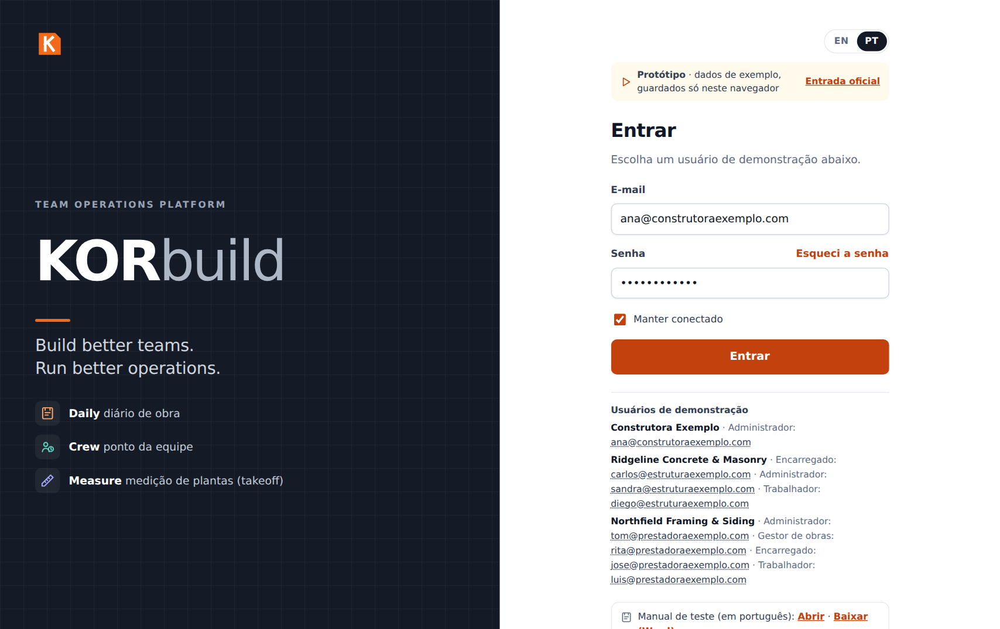
| Usuário | Empresa | Perfil | Use para mostrar |
|---|---|---|---|
| Ana Ribeiro · ana@construtoraexemplo.com | Construtora Exemplo (construtora) | Administradora | A construtora: painel com todas as prestadoras, aprovações, obras com as pessoas no canteiro, link do cliente |
| Carlos Mendes · carlos@estruturaexemplo.com | Ridgeline (prestadora) | Encarregado | O celular: diário de obra e ponto da equipe |
| Diego Santos · diego@estruturaexemplo.com | Ridgeline (prestadora) | Trabalhador | Quem só bate o próprio ponto |
| Sandra Lopes · sandra@estruturaexemplo.com | Ridgeline (prestadora) | Administradora | O escritório da prestadora: timesheets, custo de mão de obra, funcionários, encargos |
| Tom Reilly · tom@prestadoraexemplo.com | Northfield (prestadora) | Administrador | Uma prestadora com todos os módulos: Measure, cronograma, preços, uma obra própria com o dono |
| Rita Gomes · rita@prestadoraexemplo.com | Northfield (prestadora) | Gestora de obras | Uma orçamentista |
| José Pereira · jose@prestadoraexemplo.com | Northfield (prestadora) | Encarregado | O campo da segunda prestadora |
| Luis Ortega · luis@prestadoraexemplo.com | Northfield (prestadora) | Trabalhador | Um trabalhador da segunda prestadora |
Dica
Antes da reunião, abra o protótipo uma vez no aparelho que vai usar. Depois da primeira visita ele funciona também sem internet — um ótimo ponto para mostrar (ato 3).
A apresentação, ato por ato
Ato 1 — Uma plataforma, vários módulos (2 min)
- Entre como Tom Reilly (administrador da Northfield, uma prestadora com todos os módulos).
- Mostre a tela de módulos: Daily, Crew, Measure e Settings, cada um com uma descrição curta.
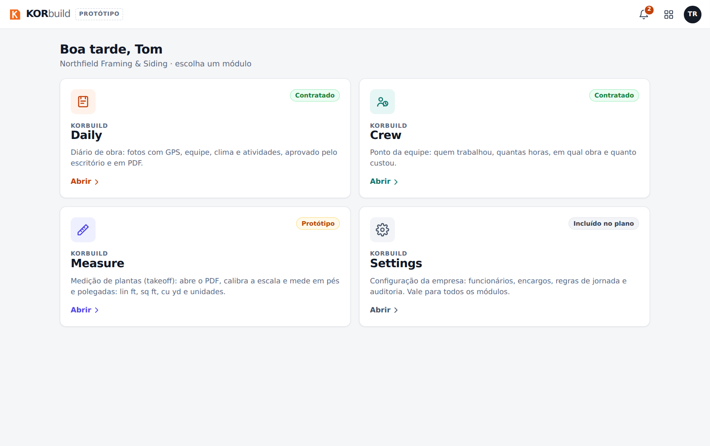
- Comente que a construtora vê menos módulos: ela gerencia as obras, então tem o Daily (para acompanhar e aprovar) e o Settings, mas não tem ponto nem medição próprios.
O que dizer
"Cada empresa liga os módulos de que precisa. As obras, as pessoas e os contatos são cadastrados uma vez e usados por todos os módulos. As prestadoras executam e registram; a construtora acompanha e aprova."
Ato 2 — O campo: o diário em minutos (5 min)
Mostre no celular, se puder; se não, deixe a janela do navegador estreita.
- Saia e entre como Carlos Mendes (encarregado da Ridgeline, a prestadora de estrutura e alvenaria). O Daily abre em Hoje.
- Mostre o quadro vermelho (RDO atrasado), o amarelo (falta o RDO de hoje, com o tempo que falta até as 18h) e o pedido de ajustes enviado pela construtora.
- Abra o Residencial Jardim das Flores e toque em ou copiar de um RDO anterior → escolha o de ontem → Copiar. A equipe, os equipamentos e as atividades em andamento vêm de ontem.
- Percorra o relatório: clima (vem sozinho, pela localização da obra), equipe (botões + e −), equipamentos, Atividades com Ditar e Melhorar texto, Ocorrências, fotos.
- Toque em Enviar para aprovação. O relatório vai para a construtora, que aprova.
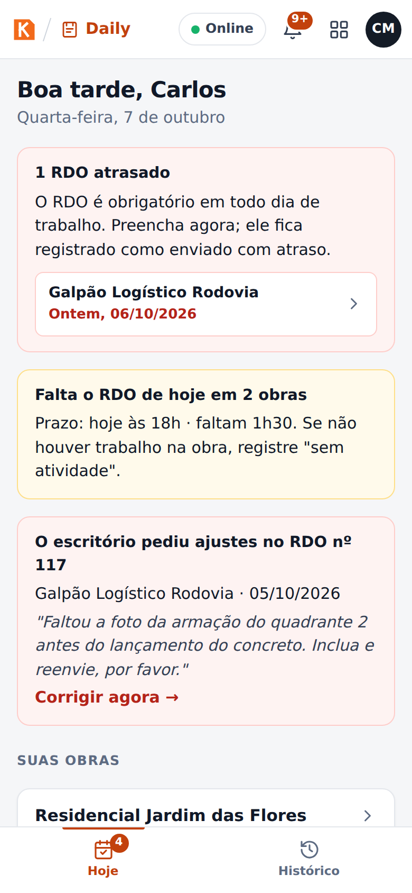
O que dizer
"O encarregado da prestadora faz o diário no fim do dia, no celular, em três ou quatro minutos — copiando o de ontem, ajustando a equipe, ditando o que foi feito. As fotos ganham um carimbo com data, hora e GPS dentro da imagem. Se ele esquecer, o app lembra às 16h, marca o atraso às 18h e avisa a construtora na manhã seguinte."
Detalhes: Manual do Daily — Preencher o diário.
Ato 3 — Sem sinal no canteiro (1 min)
- Na barra de cima, toque em Online: ele passa para sem internet (simula a falta de sinal).
- Envie um relatório: ele fica guardado no celular.
- Toque de novo para voltar a ficar online: o relatório sobe sozinho, foto por foto.
O que dizer
"Canteiro muitas vezes não tem sinal. Nada se perde: tudo fica guardado no celular e sobe assim que houver conexão."
Ato 4 — A construtora: revisar, aprovar e lacrar (5 min)
- Saia e entre como Ana Ribeiro (Construtora Exemplo). O Daily abre no Painel: os números do dia, um farol (verde, amarelo, vermelho) para cada prestadora em cada obra e a fila de aprovação com os diários das duas prestadoras.
-
Abra Obras › Residencial Jardim das Flores. Mostre Prestadoras nesta obra: a Ridgeline e a Northfield, quem está na obra agora, desde quando, e as horas — sem valores em dinheiro. Abaixo, os diários de cada prestadora.
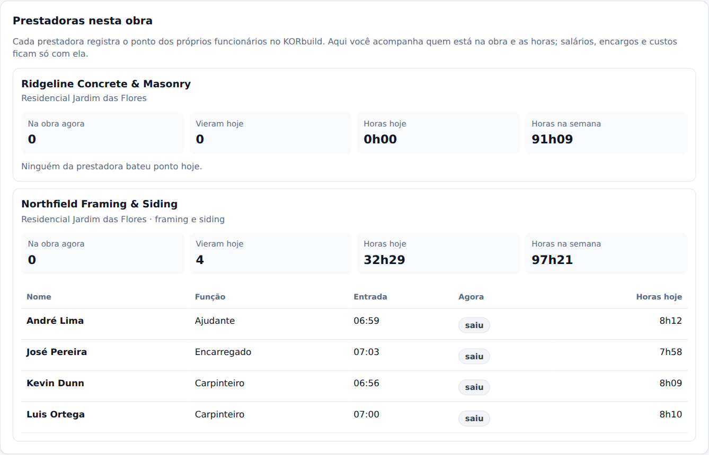
A visão da construtora: cada prestadora com as pessoas na obra e as horas -
Abra um relatório em Aguardando aprovação e clique em Revisar.
- Mostre Pedir ajustes ao canteiro: o motivo volta para o encarregado da prestadora. (Cancele, para a demonstração.)
- Clique em Aprovar e lacrar → confirme. O relatório ganha um código de verificação e ninguém mais consegue mudá-lo.
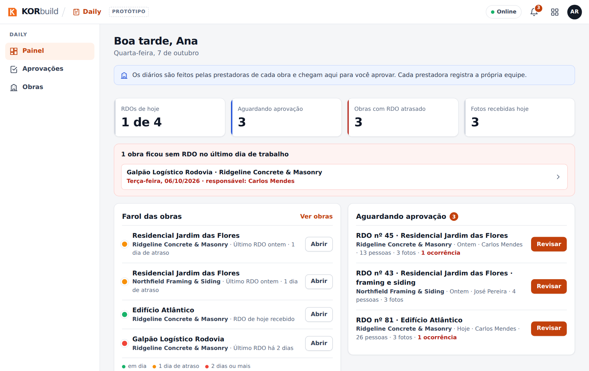
O que dizer
"Você vê de relance qual prestadora mandou o diário hoje em cada obra, quem está no canteiro e quantas horas — sem ver quanto elas pagam ao pessoal. Você aprova os diários das prestadoras; a aprovação lacra o relatório com uma impressão digital: se alguém mudar uma palavra ou uma foto depois, o link do dono mostra que o documento foi alterado."
Ato 5 — O cliente recebe o relatório (2 min)
- No relatório aprovado, clique em Ver como o contratante vê (ou Copiar link para o contratante).
- Mostre o quadro verde Documento autêntico e o relatório completo, com as fotos.
- Mostre Baixar PDF.
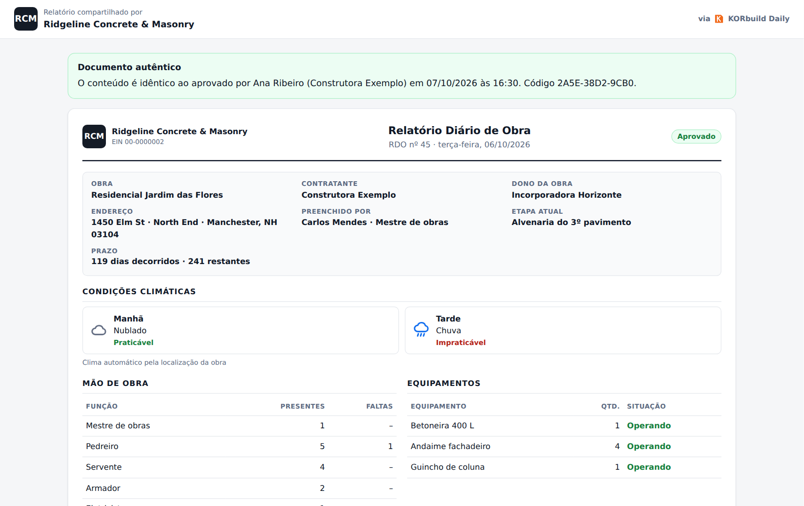
O que dizer
"O cliente não precisa de conta nem de aplicativo: só de um link. E o link prova que o relatório é exatamente o que foi aprovado. É isso que protege a empresa numa disputa por atraso."
Ato 6 — Crew: o ponto e o custo de mão de obra (6 min)
O ponto é de cada prestadora: ela bate o ponto do próprio pessoal e vê o próprio custo.
-
Entre como Diego Santos (trabalhador da Ridgeline). O KORbuild abre direto no Meu ponto: um botão grande com o que cabe agora.

Meu ponto: o trabalhador vê só o próprio ponto -
Entre como Carlos Mendes (encarregado), abra o Crew: o Ponto da equipe. Toque em Selecionar todos e em Bater entrada: a janela mostra a distância até a obra e dentro da cerca ✓. Escolha a etapa (cost code) e confirme.

A entrada da equipe inteira por um celular só -
Mostre Trocar de obra: o deslocamento até a outra obra é hora paga.
- Entre como Sandra Lopes (administradora da Ridgeline), abra o Crew: Agora mostra quem está trabalhando em cada obra e as batidas fora da obra para conferir.
- Abra Timesheets e vá para a semana anterior: horas por dia, hora extra, custo e situação. Abra Roberto Lima (aguardando aprovação) e mostre Ajustar (uma batida nova, com motivo — a original fica) e Aprovar semana.
-
Abra Custos: o Edifício Atlântico gastou 34% do orçamento e executou 31% — o KORbuild já mostra um estouro previsto de cerca de US$ 111 mil, com um terço do prazo decorrido.

Custo de mão de obra por obra, com a projeção até o fim
O que dizer
"O encarregado bate o ponto da equipe inteira em segundos, com GPS e a cerca da obra — sem cartão de papel, sem um batendo pelo outro. O escritório da prestadora aprova a semana e exporta para a folha. E o dono da prestadora vê, com um terço da obra, que a mão de obra vai estourar — enquanto ainda dá tempo de agir. A construtora vê as pessoas e as horas na obra dela, nunca os salários."
Detalhes: Manual do Crew.
Ato 7 — Measure: da planta à proposta (7 min)
Use o computador. O Measure é da prestadora que orça o serviço.
- Entre como Tom Reilly (Northfield) e abra o Measure: a lista de Projetos, com clientes, prazos das propostas e situação.
- Abra a Casa modelo e a folha A-101 · First Floor Plan. A planta ocupa a tela.
- Clique em Definir escala, escolha
1/4" = 1'-0"e confira na cota de 40'-0" do alto: clique nas duas pontas e digite40'. A barra mostra conferida. -
Incluir assembly › Parede externa 2x6 @ 16" (com altura) › nome Paredes externas, altura
9'-0"› Incluir no desenho. Clique nos quatro cantos da casa e aperte Enter: cerca de 136 lin ft e 1.224 sq ft de parede.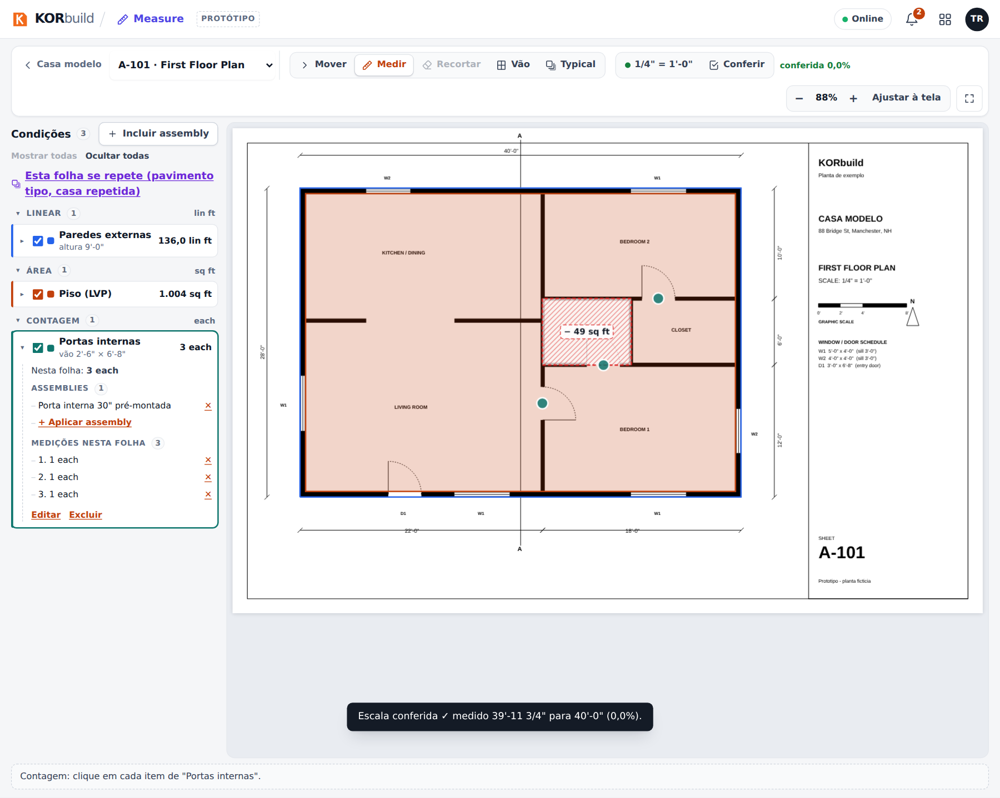
Medição na planta baixa -
Volte ao projeto e abra Materiais e mão de obra: montantes, guias, OSB, house wrap, isolamento, drywall e as horas de carpinteiro. Clique em OSB para mostrar a conta: superfície da parede ÷ 32 + 10% de perda, arredondado para chapas inteiras.
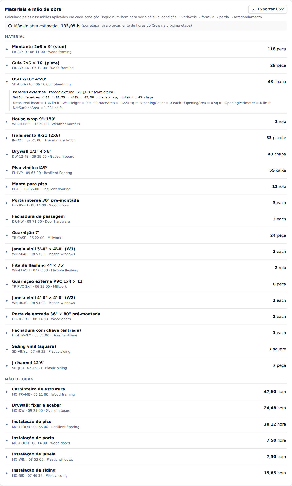
Materiais e mão de obra, com a conta de um item -
Abra a Lista para cotação: cada fornecedor recebe só os itens dele, na unidade de compra, sem preço. Mostre Enviar por e-mail e PDF.
- Abra a Proposta: uma linha por etapa, com o preço calculado pelo catálogo e pelas margens; digite outro valor numa linha para mostrar o preço fechado. Ver o documento mostra o PDF que o cliente recebe.
O que dizer
"O orçamentista abre as plantas em PDF no navegador e mede com o mouse, em pés e polegadas. Uma medição da parede vira todos os materiais e as horas — e cada número mostra a sua conta. Os fornecedores recebem as listas com um clique, e a proposta sai com o preço dos seus custos e das suas margens. Custo e lucro nunca saem da empresa."
Detalhes: Manual do Measure.
Ato 8 — Settings e o cronograma da obra (5 min)
- Entre como Sandra Lopes (Ridgeline) e abra o Settings. Abra Funcionários › Carlos Mendes: a empresa empregadora, o valor hora atual, a hora extra e o custo carregado, as certificações perto de vencer.
-
Clique em Alterar valor hora para mostrar que um aumento vale a partir de uma data: o histórico guarda todos os valores, e as semanas aprovadas nunca mudam. (Cancele.)
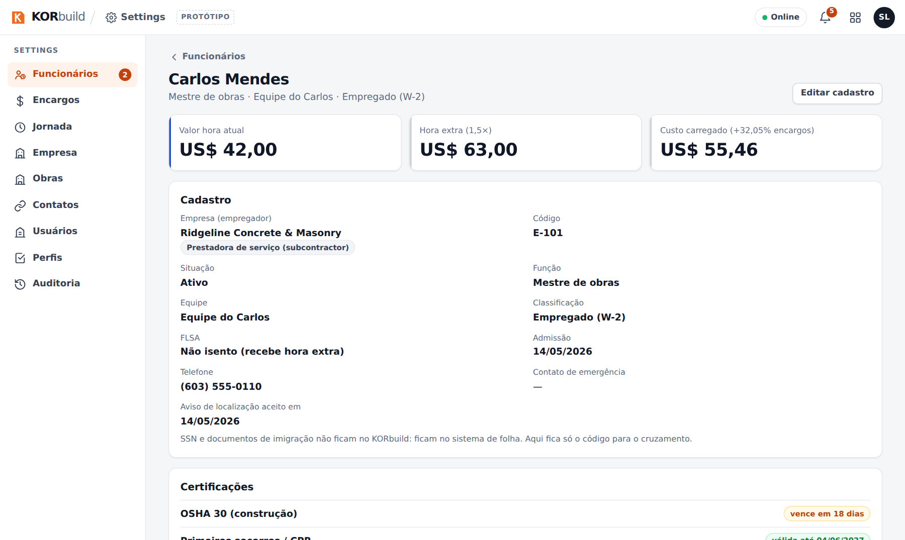
Um funcionário, com os cartões do valor hora -
Abra Encargos e Jornada: versões com vigência — a regra de New Hampshire, hora extra acima de 40 horas, intervalo de 30 minutos depois de 5 horas — e o histórico.
- Abra Perfis: a matriz de permissões. Mostre Ver custos e valores em dinheiro, separada da aprovação das horas.
-
Entre como Tom Reilly (Northfield) e abra Daily › Obras › Residencial Jardim das Flores · framing e siding › Abrir cronograma: avanço real × planejado, uma etapa atrasada, a previsão de término contra a linha de base, o Gantt com as barras da linha de base.
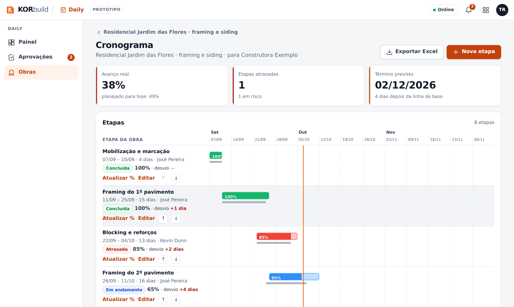
O cronograma da obra -
Mostre Publicar para o contratante; depois entre como Ana e abra a mesma obra: a versão publicada, só leitura, com Exportar Excel.
O que dizer
"Tudo o que a empresa pode querer mudar fica aqui — valores, encargos, regras de hora extra, quem pode fazer o quê — e nada reescreve o passado: um aumento vale a partir de uma data, e a folha da semana passada continua como estava. O cronograma é da obra: o avanço vem dos diários aprovados, e a prestadora decide quando a construtora vê uma versão nova."
Detalhes: Manual do Settings.
Ato 9 — Concorrências: do convite à obra ligada (6 min)
- Entre como Ana Ribeiro e abra Daily › Concorrências: Framing e drywall no Edifício Atlântico, aberta, com prazo em 5 dias.
- Abra a concorrência. Convidados: a Northfield (com KORbuild) e a Bayside (pelo link) mandaram proposta; a Pine Ridge não vai participar, com o motivo.
- Perguntas: a Bayside perguntou sobre os andaimes e a Ana respondeu para todas — a Northfield vê a pergunta sem saber quem perguntou. A pergunta da própria Northfield foi respondida só para ela.
-
Comparar: uma linha por etapa ao lado do orçamento, o menor valor em verde, o framing da Bayside não cotada (nunca zero) e o ⚠ nos andaimes: a Bayside excluiu algo que está no escopo. Clique em Fechar com esta na Northfield para mostrar os avisos e cancele.

Comparando as propostas -
Entre como Tom Reilly e abra Measure › Convites › Framing e drywall: o mesmo pacote, nada das outras convidadas. Criar o projeto no Measure: o projeto já vem com o cliente, o endereço e o prazo.
- Abra Daily › Concorrências › Drywall das casas: a Northfield quarteiriza parte do serviço no Jardim para a Bay State, que não tem conta.
-
Copie o link em Convidados e abra numa janela anônima: a Bay State vê o convite sem login e manda a proposta com o PDF.

A página do link -
De volta como Ana, abra a concorrência do Jardim (fechada com a Northfield) e a página da obra: o canal com a Northfield agora é a conversa da obra.
O que dizer
"A concorrência é onde a relação começa. Cada prestadora só vê o próprio convite e os próprios números; você compara por etapa e vê o que cada uma deixou de fora. Ao fechar, a obra da prestadora nasce ligada à sua — diário, equipe e cronograma passam a correr no primeiro dia. E a prestadora que não está no KORbuild cota por um link, sem conta."
Detalhes: manual das Concorrências.
Ato 10 — Mais para mostrar (opcional)
- Mais do Measure — como Tom: as fachadas (siding com a empena, janelas e portas descontadas, a ferramenta Vão) e o projeto Townhouses Elm Row, em que a planta de uma unidade é medida uma vez e vale × 6.
- Uma prestadora sozinha — como Tom, Daily › Obras › Residência Thompson: uma obra direto com o dono, sem construtora. Aqui a própria Northfield aprova os diários.
- O Settings da construtora — como Ana: obras com as prestadoras, contatos, usuários e perfis; sem encargos nem jornada, porque a construtora não bate ponto de ninguém.
Perguntas que os clientes fazem
| Pergunta | Resposta |
|---|---|
| A prestadora vê as outras propostas? | Não. Cada convidada vê só o próprio convite e as próprias propostas — nunca quem mais foi convidado nem os valores. Quem perde é avisado de que não foi escolhido, sem o valor da vencedora. |
| Uma prestadora pode contratar outra? | Pode. Ela faz a concorrência do mesmo jeito (enquanto orça ou depois de ganhar). Quem a contratou pode exigir aprovação; a construtora vê a cadeia inteira na obra, sem valores. |
| Funciona sem internet? | Sim. Depois da primeira visita o app fica guardado no celular; diários e batidas ficam no aparelho e sobem quando houver sinal. |
| Preciso instalar um aplicativo? | No protótipo, não: ele roda no navegador e pode ser colocado na tela inicial. As versões na App Store e no Google Play estão previstas. |
| O encarregado consegue mudar o diário depois de aprovado? | Não. A aprovação lacra. Ajustes são pedidos antes da aprovação ("Pedir ajustes ao canteiro"). |
| O que o cliente precisa ter? | Nada: ele recebe um link e pode baixar o PDF. Sem conta, sem custo. |
| A construtora vê quanto a prestadora paga ao pessoal? | Não. Ela vê nomes, horário na obra e horas. Salários, encargos e custo ficam com a prestadora. |
| Preciso de uma construtora para usar o KORbuild? | Não. Uma prestadora pode assinar sozinha e tocar as obras direto com o dono. |
| Quem aprova o diário da prestadora? | A construtora da obra. Numa obra direto com o dono, a própria prestadora aprova. |
| Dá para falsificar uma foto ou uma data? | Cada foto leva um carimbo com data, hora e GPS dentro da imagem, além da impressão digital do arquivo original. O relatório aprovado é lacrado; qualquer mudança aparece no link do cliente. |
| Manda lembrete por SMS ou e-mail? | Ainda não: os lembretes vão para as notificações do app (o sininho) e do celular. SMS e e-mail estão em avaliação. |
| Onde ficam os meus dados? | No protótipo, só no navegador. No produto, num banco de dados seguro na nuvem, separado por empresa. |
| Quanto custa? | Preço não faz parte do protótipo. |
A confirmar
Preços, planos, a data dos aplicativos nas lojas e as integrações (folha, contabilidade) são decisões comerciais ainda abertas. Não assuma compromissos sobre elas na apresentação.